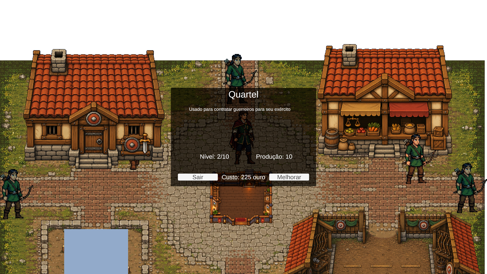

O foco está no modal dos cinco edifícios e no feedback de impostos, que ainda usam o visual legado.
Ouro, interação, alertas de onda e viagem já aproveitam os componentes redesenhados.
Propostas renderizadas no Unity com o kit visual do Portão e os sprites reais dos edifícios.
Dados fixos para discussão. Estas imagens são do protótipo; o resultado da integração funcional está na revisão da etapa 1.
1. Um template para construção e melhoria
Ilustração e nível à esquerda; comparação do benefício à direita. O custo, o saldo e o resultado esperado
ficam juntos antes da ação principal. Cabeçalho, subtítulo, feedback e botões têm áreas próprias.
 Exemplo: Quartel nível 2 → 3. A capacidade passa de 16 para 19 guerreiros no próximo reestoque, por 225 ouro.
Exemplo: Quartel nível 2 → 3. A capacidade passa de 16 para 19 guerreiros no próximo reestoque, por 225 ouro.
Comparar com o modal atual

Antes da integração: textos genéricos, botões neutros e pouco contexto para a decisão.
Proposta: benefício atual/próximo, custo explícito e ação nomeada. Ver em 1366 × 768

A palavra “Produção” será substituída pelo efeito real: recrutas por reestoque, ouro por minuto ou aventureiros por onda.
A melhoria militar não entrega tropas imediatamente; isso aparece antes de confirmar.
2. Estados claros antes de gastar
Edifício ainda não construído
Mostrar benefício inicial, custo e “Construir por X ouro”. O estoque base do recrutamento continua sendo considerado.

Ouro insuficiente
Indicar exatamente quanto falta, com motivo legível ao lado da decisão indisponível.

Nível máximo
Reconhecer a conclusão, manter o benefício atual visível e oferecer uma única saída.

Requisitos extras de recursos só aparecem quando estiverem configurados no edifício.
Não adicionei madeira, pedras ou outros custos fictícios aos exemplos.
4. Impostos sem interromper a cidade
Manter a coleta em uma ação e usar um aviso compacto: “+X ouro coletado” e o saldo atualizado.
Proponho aumentar a duração de leitura para 3–4 segundos e aguardar o fechamento de modais antes de exibir.
 Feedback próximo ao indicador, sem fundo escuro bloqueando a cidade.
Feedback próximo ao indicador, sem fundo escuro bloqueando a cidade.
Opção: prévia de impostos antes de interagir
Placa compacta no canto superior esquerdo, preferencialmente contextual à proximidade do coletor.
Essa prévia ainda precisa de integração de dados somente leitura; não é um HUD já implementado.

Sem Mercado: “Construa o Mercado Local para gerar impostos”. Sem valor acumulado: “Ainda não há impostos disponíveis”.
Assim o feedback informa o próximo passo e não exige confirmação para uma coleta rotineira.